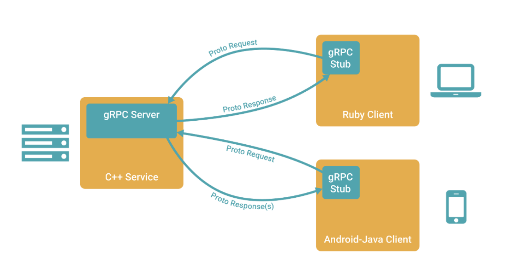

gRPC#
欢迎进入 gRPC 的介绍文档，gRPC 一开始由 google 开发，是一款语言中立、平台中立、开源的远程过程调用(RPC)系统。
大部分文档和资料都参考自：
什么是 gRPC#
想象这样一个场景，我们有一个 client 和 server。在 client 端，我们写好了一些非常复杂的函数或者某些应用，我们想在 server 端进行调用。gRPC 的存在就是帮助我们：定义一个*服务*，指定其能够被远程调用的方法（包含参数和返回类型）。

思考：我们会如何设计 gRPC？#
在不知道任何 gRPC 的功能之前，我们要思考，gRPC 到底是做什么的。首先，类似 ZMQ，互相通信的是 client 和 server；server 端有一个函数，client 端需要调用。第一步就是，建立通讯，就是我们要告诉 server 和 client，他们是互相通讯的。伪代码如下：
server = gRPC.server(); // create a new server
server.add_port(some_port); // connect to a port
client = gRPC.client(); // create a new client
client.connect_server(); // connect to a server
以最简单的加法为例子，server 有这么一个函数：
int add(int& x, int& y)
{
return x+y;
}
但是 client 并不知道这个函数，如何实现的，但是我们知道函数的名字以及函数接口，那么我们 client 就可以传一个消息，其中包含了指定的函数（某种方法去选择具体的函数），以及函数参数。那么 server 端需要能够解码，知道 client 传过来的消息，是提出了一个怎样的 request。这个协议的方法就叫 gRPC。
比方说，我们的协议就可以是 函数名字 + 参数列表，以空格来分开
string msg = 'add' + ' ' + to_string(1) + ' ' + to_string(2);
client.send(msg);
recv_msg = server.recv(msg);
encode_msg = recv_msg.encode(); // add, x = 1, y = 2
但是我们知道，函数是千变万化的，参数类型可以是 int，string，甚至是结构体，而且请求不一定是访问某个函数，可能是一系列的操作，相当复杂，所以上述的 encode 和 decode 方式，就显得太 naive 了。
这时候就有 gRPC 正式出场了，gRPC 就是利用 protoco buffer 去实现 encode 和 decode 的过程。
接下来我们就开始正式介绍 gRPC
gRPC 实验#
原始实验，可以参考Medium gRPC 介绍
我们以如下路径开始创建一个文件夹：
.
├── blueprint <- Source root - Name of our project
│ ├── app.py <- Application server
│ ├── add_client.py <- gRPC client for testing
│ ├── generated <- Generated gRPC Python code
│ │ ├── add_pb2_grpc.py
│ │ └── add_pb2.py
│ ├── grpc.py <- Actual gRPC code
│ ├── __init__.py
│ ├── __main__.py
│ ├── proto <- Protobuf definitions
│ │ └── add.proto
│ └── resources
├── tests <- Test suite
│ ├── conftest.py
│ ├── context.py
│ ├── __init__.py
│ └── test_grpc.py
├── Makefile
├── pytest.ini
└── requirements.txt
环境配置可以参考Medium gRPC 介绍
先看核心部分，add.proto部分：
syntax = "proto3";
package add;
// The request message containing the user's message.
message AddRequest {
int32 x = 1;
int32 y = 2
}
// The response message containing the original message.
message AddReply {
int32 ret = 1;
}
// The echo service definition.
service Add {
// Echo back reply.
rpc Reply (AddRequest) returns (AddReply) {}
}
在这个 add.proto 部分，我们实际上定义了三个函数，一个是 AddRequest，第二个是 AddReply，第三个是 Add。在 AddRequest 里面，x = 1 和 y = 2 意义并不是给 x 和 y 赋值，而是给 x 和 y 分配不同的 field；同理 AddReply。
利用命令
python -m grpc_tools.protoc -I blueprint/proto --python_out=./blueprint/generated --grpc_python_out=./blueprint/generated ./blueprint/proto/*.proto
sed -i -E 's/^import.*_pb2/from . \0/' ./blueprint/generated/*.py
就可以根据 add.proto的配置，在 /blueprint/generated 文件夹下，自动生成两个文件。
在 grpc.py 文件中，我们填写：
# grpc.py
from .generated import add_pb2_grpc, add_pb2
class Adder(add_pb2_grpc.AddServicer):
def AddReply(self, request, context):
return add_pb2.AddReply(ret=(request.x + request.y))
这样就可以调用 add_pb2_grpc 和 add_pb2 里面的定义好的类
接下来配置server端，给定 port，server要建立连接。
# app.py
from concurrent import futures
import grpc
from .generated import add_pb2_grpc
from .grpc import Adder
class Server:
@staticmethod
def run():
server = grpc.server(futures.ThreadPoolExecutor(max_workers=10))
add_pb2_grpc.add_EchoServicer_to_server(Adder(), server)
server.add_insecure_port('[::]:50051')
server.start()
server.wait_for_termination()
配置 _main_.py
# __main__.py
from .app import Server
if __name__ == '__main__':
Server.run()
配置client，connect 和 server端一样的通道。
from __future__ import print_function
import logging
import grpc
from .generated import add_pb2
from .generated import add_pb2_grpc
def run():
with grpc.insecure_channel("localhost:50051") as channel:
stub = add_pb2_grpc.AddStub(channel)
response = stub.ADDReply(add_pb2.AddRequest(x=1, y=2))
print("Echo client received: " + str(response.ret))
if __name__ == '__main__':
logging.basicConfig()
run()
这样就可以进行交互了！
然后运行 Medium gRPC 介绍 的命令即可。